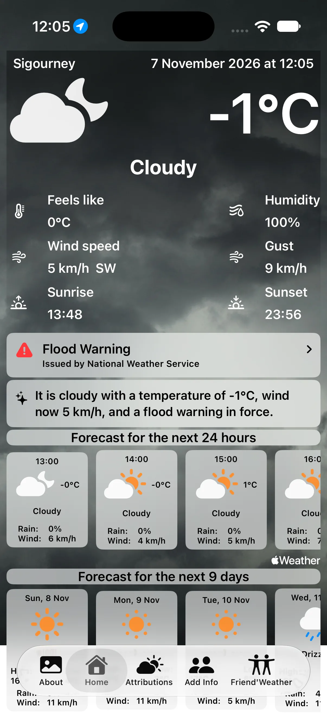
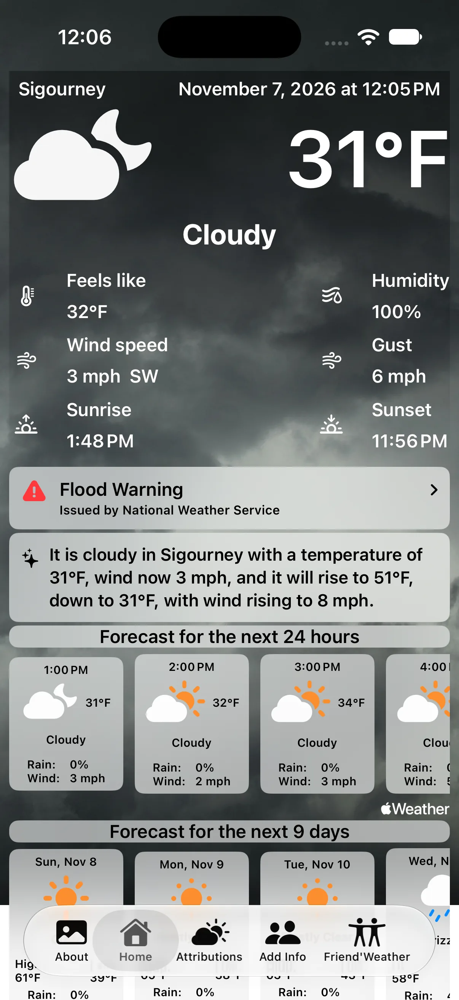

October 30, 2026
Temperatures and wind in your own units, official weather alerts, and a one-line brief of the day written on the device itself.
Pacheco 1.3 reads the device's own settings for units, shows official weather alerts, and writes a one-line brief of the day on the device itself.


Pacheco uses the Temperature and Measurement System choices under Settings › General › Language & Region. A visitor from the United States sees Fahrenheit and mph wherever they are, and a Spaniard sees Celsius and km/h in New York. The widget's small "Units" line opens the place to change them.
1.2.2, two days earlier, was the other half of this: the widget had been following the device's region while the app stayed in Celsius, so the two could disagree on the same screen.
When the national weather service has an alert in force for your place or a friend's, it appears between the readings and the forecast, with the issuing authority and a link to the details. The widget's cards show the most severe one.
On devices with Apple Intelligence, a one-line brief of the day is written on the device from the figures already on screen, in your language. Nothing leaves the device.
In the pictures above it is doing both jobs at once: the left one folds the flood warning into the sentence, and the right one, on a device in US units, gives the day's range in Fahrenheit.
Sharper photographs for drizzle at night, storms at night and snow — the last four that were still the small originals. The About tab now shows the version.
Pacheco on the App Store — free, for iPhone and iPad, and for Macs with Apple silicon.
Questions, corrections, or just to say it worked for you — write to me at commonerdev [at] gmail.com.
30 de octubre de 2026
Temperaturas y viento en tus unidades, avisos meteorológicos oficiales, y un resumen del día en una línea redactado en el propio dispositivo.
Pacheco 1.3 lee los ajustes del propio dispositivo para las unidades, muestra los avisos meteorológicos oficiales, y redacta en el dispositivo un resumen del día en una línea.
Pacheco sigue los ajustes de Temperatura y Sistema de medidas de Ajustes › General › Idioma y región. Quien venga de Estados Unidos ve Fahrenheit y mph en cualquier lugar, y quien viva en España ve Celsius y km/h en Nueva York. La línea «Unidades» del widget abre el lugar donde cambiarlos.
Cuando el servicio meteorológico nacional difunde un aviso en vigor para tu ubicación o la de un amigo, aparece entre las lecturas y el pronóstico, con la agencia que lo emite y un enlace a los detalles. Las tarjetas del widget muestran el más crítico.
En dispositivos con Apple Intelligence, se redacta en tu idioma un resumen del día en una línea, a partir de las cifras disponibles en pantalla.
En las imágenes de arriba cumple las dos funciones a la vez: la de la izquierda inserta el aviso de inundación en la frase, y la de la derecha, en un dispositivo con unidades estadounidenses, muestra el rango del día en Fahrenheit.
Fotografías más nítidas para la llovizna nocturna, las tormentas nocturnas y la nieve: las últimas cuatro que seguían siendo los archivos pequeños. La pestaña Acerca de, muestra ahora la versión.
Pacheco en el App Store — gratis, para iPhone y iPad, y para Mac con chip de Apple.
Preguntas, correcciones, o solo para contarme que te funcionó: escríbeme a commonerdev [at] gmail.com.